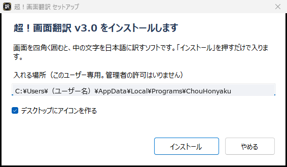
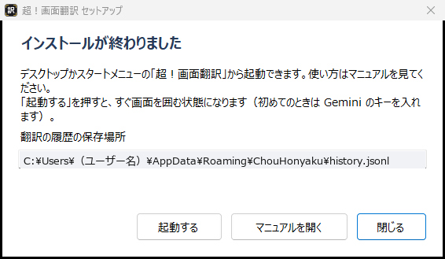
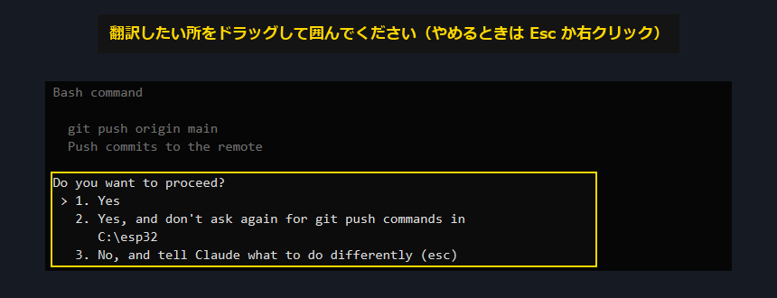
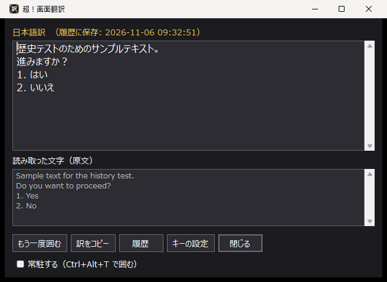
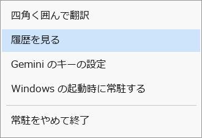
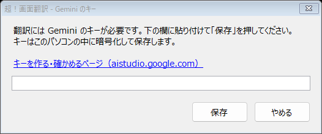
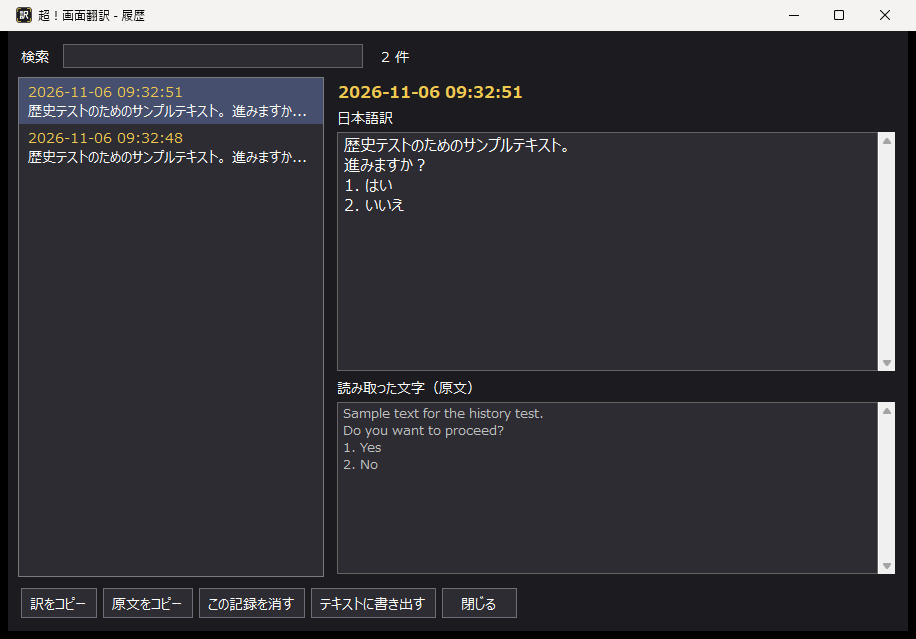
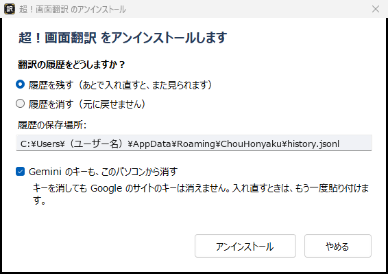

（ソフトの版: v3 2026-11-06 作成）
超！画面翻訳は、Windows の画面に出ている文字をマウスで四角く囲むだけで日本語に訳すソフトです。Claude Code の画面に出る英語のメッセージを読むために作りました。ブラウザや PDF など、ほかのソフトの画面でも囲めます。
超！画面翻訳_セットアップ_v3.exe をダブルクリックします。

| もの | 場所 |
|---|---|
| ソフト本体とこのマニュアル | %LOCALAPPDATA%\Programs\ChouHonyaku（ふつうは C:\Users\ユーザー名\AppData\Local\Programs\ChouHonyaku） |
| 起動するアイコン | デスクトップ（チェックを入れたとき）とスタートメニューの「超！画面翻訳」 |
| 履歴・キー・設定 | %APPDATA%\ChouHonyaku（7 章） |
パソコンのこのユーザーだけが使う場所なので、管理者の許可がいりません。同じパソコンの別の Windows ユーザーで使うときは、そのユーザーでもインストールします。


| 窓のボタン | はたらき |
|---|---|
| もう一度囲む | 別の所を囲みます |
| 訳をコピー | 日本語訳をコピーします |
| 履歴 | これまでの翻訳を見ます（7 章） |
| キーの設定 | Gemini のキーを入れ直します |
| 閉じる | 窓を閉じます（Esc キーでも閉じます）。常駐していなければ、ソフトも終わります |
| 常駐する | 3 章を見てください |
囲むのをやめるときは、Esc キーか右クリックです。
「常駐」は、ソフトを動かしたまま画面右下に待機させることです。何度も翻訳するときに便利です。

| メニュー | はたらき |
|---|---|
| 四角く囲んで翻訳 | 囲む画面を出します |
| 履歴を見る | これまでの翻訳を見ます（7 章） |
| Gemini のキーの設定 | キーの入力窓を開きます |
| Windows の起動時に常駐する | 押すたびに ON / OFF が変わります。ON にすると、パソコンを起動したとき自動で常駐します。初めは OFF です |
| 常駐をやめて終了 | ソフトを終わります。次からは常駐しない使い方に戻ります |
キーが入っていないソフトを起動すると、最初に入力窓が出ます。

このとき常駐の設定は変わりません。「常駐をやめて終了」で閉じれば、次もふつうに起動します。
ChouHonyaku.exe の中には入りません。パソコンの中（%APPDATA%\ChouHonyaku\）に暗号化して保存します。そのため、別のパソコンで使うときは、キーを入れ直します。Google の「Google AI Studio」というサイトで作ります。Google アカウントが必要です。
| こんなとき | どうするか |
|---|---|
| 一覧に何も出ない | 別の Google アカウントで作ったのかもしれません。アカウントを替えて見てください |
| Google Cloud のプロジェクトで作ったキーが出ない | Dashboard → Projects → Import projects で、そのプロジェクトを取り込みます |
| キーの全部が見られない・コピーできない | 新しく作ります（5 章）。キーをもう一度全部見られるかどうかは、Google の説明に書かれていません |
| Blocked の札が付いている | 長く使っていないため止められたキーです。新しく作ります（5 章） |
超！手書きなどの GAS に GEMINI_KEY としてキーを入れた場合は、そこで確かめられます。
GEMINI_KEY の値を見ます。Android 版の家電チェッカーの「AI（Gemini）の設定」には、キーの最初と最後の 4 文字だけが出ます。全部は見られないのでコピーには使えませんが、キーが何本もあるとき、どれが使っているキーかを見比べる手がかりになります。
新しく作るのが一番簡単です（5 章）。新しいキーを作っても、前のキーを自分で削除しなければ、前のキーが消えることはありません。
訳せたものは、日本語訳・原文・西暦の日付と時間を自動で保存します。日時は、画面を囲んだときのものです。翻訳の窓の見出しに、保存した日時が出ます。
エラーになったときと、訳が届く前に窓を閉じたときは保存しません。

| 窓の部品 | はたらき |
|---|---|
| 左の一覧 | 新しい順に、日時と訳の出だしが並びます。押すと右に中身が出ます |
| 検索 | 日時・訳・原文から探します。「2026-11-06」と入れると、その日のものだけになります |
| 訳をコピー／原文をコピー | 選んだものの訳か原文をコピーします |
| この記録を消す | 選んだ 1 件を消します。元に戻せません |
| テキストに書き出す | 一覧に出ているものを、1 つのテキストファイルに保存します。検索中は、見つかったものだけです |
履歴は、ソフト本体とは別のファイルに保存しています。
%APPDATA%\ChouHonyaku\history.jsonl
（ふつうは C:\Users\ユーザー名\AppData\Roaming\ChouHonyaku\history.jsonl）
%APPDATA%\ChouHonyaku と入れて、Enter キーを押します。history.jsonl はありません。
| 選ぶもの | はたらき |
|---|---|
| 履歴を残す（初めはこちら） | 履歴のファイルを残します。もう一度インストールすると、また見られます |
| 履歴を消す | 履歴のファイルを消します。確かめる窓で「はい」を押すと消えます。元に戻せません |
| Gemini のキーも、このパソコンから消す | 初めはチェックが入っています。外すとキーが残り、入れ直したときにそのまま使えます。消しても Google のサイトのキーは消えません |
「アンインストール」を押すと、ソフトが動いていれば終了してよいか確かめてから消します。
| 消えるもの | ソフト本体、このマニュアル、スタートメニューとデスクトップのアイコン、Windows の起動時の常駐、常駐の設定 |
|---|---|
| 選んだときだけ消えるもの | 履歴、Gemini のキー |
| 残るもの | 「テキストに書き出す」で保存したファイル、自分で別の場所にコピーした exe やそのショートカット |
| こんなとき | どうするか |
|---|---|
| 「Gemini のキーが使えませんでした」と出る | キーが間違っているか、止められています。コピーし直して入れるか、新しく作ってください |
| 「無料の回数を使い切ったようです」と出る | 少し待ってから試してください |
| 「Gemini が混んでいます」と出る | 少し待ってから試してください |
| 「インターネットにつながりませんでした」と出る | インターネットの接続を確かめてください |
| 「Gemini からエラーが返りました」と出る | 正しいキーでも続くときは、ソフトが使う Gemini のモデルが終わった可能性があります。ソフトを直す必要があります |
| Ctrl + Alt + T が効かない | ほかのソフトが同じキーを使っているか、管理者権限のソフトを操作中かもしれません。「訳」のアイコンをクリックしてください |
| 黒く写って読めない | 動画配信など、コピー防止のある画面は読めないことがあります |
| メニューを出して囲もうとすると消える | 先にメニューを出してから Ctrl + Alt + T を押してみてください（常駐中のみ）。それでも消える画面は囲めません |
| ソフトを消したい | 8 章の手順でアンインストールします |
| 履歴に保存できないと出る | 翻訳の窓の見出しに「履歴に保存できませんでした」と出たときは、その 1 件は残っていません。必要なら「訳をコピー」で控えます。空き容量や、7 章のフォルダを確かめてください |